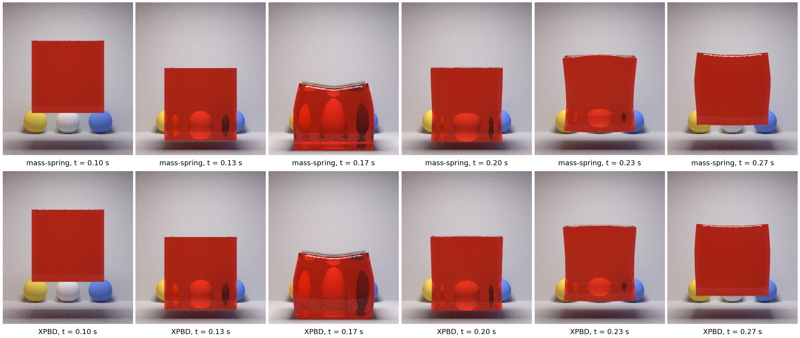
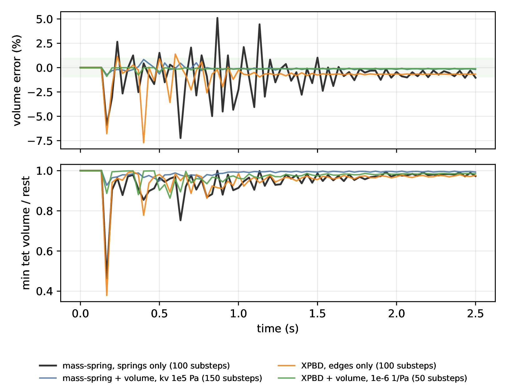
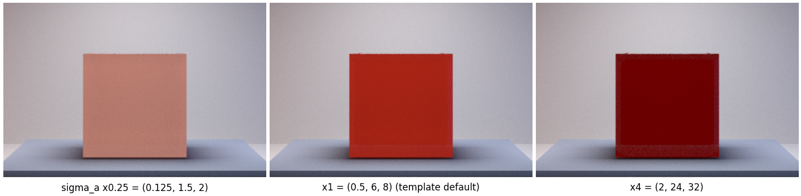

CS 184/284A Final Project Milestone
Simulating and Path-Tracing Translucent Jello
- Eric Wu
- Wenxuan Yuan
- Arthur Yu
- Alex Dils
University of California, Berkeley
Links: webpage · video [TODO: URL] · slides [TODO: URL]
Abstract
We simulate a block of jello as a volumetric soft body with two solvers, a mass-spring system on a tetrahedral mesh and XPBD with volume constraints, and render each frame in our own path tracer as a refractive, absorbing medium. At the milestone the full pipeline runs end to end: both solvers, with volume terms, friction and a shaking plate, export every frame to the path tracer, and we have rendered both planned scenarios (drop and shake) for both solvers.

1. Progress
Mesh. An 8 × 8 × 8-cell grid split into five tetrahedra per cell, mirrored by cell parity so face diagonals match, gives a 10 cm block with 729 vertices, 2,560 tets and 768 boundary triangles.
Solvers. Mass-spring: a damped spring on each tet edge, semi-implicit Euler, and an optional per-tet volume penalty E = ½ kv (V − V0)2 / V0. XPBD [Macklin et al. 2016]: edge-distance and tet-volume constraints with substepping and one symmetric Gauss–Seidel pass per substep. We match the materials by setting compliance to 1/ks and 1/kv, so differences between the solvers come from the integration, not the material.
Contact. Both solvers share one collider interface (signed distance, normal, collider velocity) and one Coulomb friction rule, applied at the velocity level for mass-spring and at the position level for XPBD. Colliders are the ground and a kinematic plate shaking sinusoidally (5 Hz, 10 mm, near the block's sway resonance of 5.5 Hz). A sliding test matches Coulomb's stopping distance v02 / 2μg within 1.5% for μ ≤ 0.5 with both solvers.
Rendering. The simulator writes each frame's boundary surface into a template COLLADA scene for our HW3 path tracer. We implemented the dielectric BSDF (exact Fresnel), fixed the integrator for transmitted rays, and added a jello material (ior 1.34) with Beer–Lambert absorption [Pharr et al. 2023]: a ray segment that leaves the jello through its outward geometric normal ran inside it, so its radiance is scaled by e−σat. This needs no inside/outside state because the mesh is watertight. Against the analytic transmittance of a slab (Fresnel at both faces plus inter-reflections), renders agree within 1.1% for optical depths 0–2.
2. Preliminary Results
Volume preservation. Without volume terms the block loses up to 7–8% of its volume on impact and single tets shrink to 38–46% of their rest volume. With them, both solvers stay under the proposal's 1% target (Figure 2, Table 1).
Stability and cost. The penalty term makes explicit mass-spring stiffer, so it needs more substeps (38 → 60 at kv = 105 Pa; 159 at 106). XPBD's volume constraints do the opposite (39 → 22), because they prevent the tet inversions that limit edge-only XPBD. An XPBD substep costs about 5× a mass-spring substep, so at equal accuracy (0.3% error) the two cost about the same per frame (21 vs. 19.5 ms). Both run faster than real time.

| Solver | Substeps | Vol. err. | ms/frame |
|---|---|---|---|
| Mass-spring, springs only | 100 | 7.24% | 2.2 |
| Mass-spring + kv = 105 Pa | 150 | 0.84% | 8.1 |
| Mass-spring + kv = 106 Pa | 400 | 0.30% | 21.3 |
| XPBD, edges only | 100 | 7.71% | 11.3 |
| XPBD + volume (10−6 Pa−1) | 50 | 0.90% | 9.7 |
| XPBD + volume (10−6 Pa−1) | 100 | 0.32% | 19.5 |
Solver comparison. With matched materials the two solvers drop, squash and rebound almost identically (Figure 1). On the shaking plate they sway and rock by similar amounts, but stick-slip makes their paths drift apart after a few cycles. XPBD needs 100 substeps for the shake: at 50 it behaves as a softer material. Below about 50 substeps XPBD also adds a spurious spin on impact, which we attribute to the sequential constraint ordering.
Rendered sequences. All four sequences (drop and shake, both solvers; 4 s, 121 frames each) are rendered at 960×540, 64 spp, max depth 8, with worst volume errors of 0.09–0.47%. Rendering took 7.4 h on one laptop (47–65 s per frame). Absorption gives the jello its color (Figure 3).

3. Progress Against the Plan
Every Week 1 and Week 2 item in the proposal is done, and the milestone goal (both scenarios, both solvers, rendered end to end) is met. Changes from the plan:
- No caustics. Counting emission after every specular bounce produced caustics but filled the walls with fireflies at 64–256 spp. We count it only on purely specular camera paths, so shadows under the jello are dark.
- Shake parameters. We use 5 Hz, 10 mm instead of the sketched 3 Hz, 15 mm, at which the block just rides the plate.
- Render noise. At 64 spp the impact frames show grain near the bottom of the block, from long internally reflected paths.
4. Updated Plan
Week 3 (Nov 23–29). Record real jello and fit stiffness and damping to its oscillation frequency and decay. Run the stiffness, time-step and resolution sweeps (up to 163 cells, 20,480 tets) with each volume term on and off. Try graph-colored XPBD to remove the spin artifact. Tune σa and ior against photos of real jello.
Week 4 (Nov 30–Dec 6). Freeze code on Dec 2 and render the final sequences on all four laptops, at more samples per pixel for hero frames. Write the final plots, paper, video and presentation. Volumetric scattering and a deformation-aware medium remain stretch goals if time allows.
References
- M. Macklin, M. Müller, N. Chentanez. “XPBD: Position-Based Simulation of Compliant Constrained Dynamics.” Motion in Games, 2016.
- M. Pharr, W. Jakob, G. Humphreys. Physically Based Rendering: From Theory to Implementation, 4th ed., 2023. Ch. 11 (Volume Scattering) and Ch. 14 (Light Transport II: Volume Rendering).